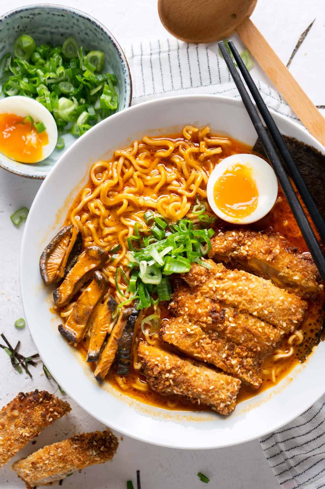

Katsu Ramen

Description
Chicken katsu ramen is a variation of the traditional Japanese noodle dish, katsu ramen.
Like its pork-based counterpart, chicken katsu ramen features a savory broth, tender noodles, and a crispy cutlet, but in this case, the cutlet is made from chicken instead of pork
Chicken katsu ramen has its own unique cultural significance in Japanese cuisine.
For example, it is often considered a lighter alternative to traditional pork katsu ramen, making it a popular option for health-conscious diners.
It is also a common choice for those who avoid pork for religious or dietary reasons.
In addition, chicken katsu ramen has been adopted and adapted by Japanese communities around the world, becoming a popular dish in many countries.
This has led to the development of different variations of chicken katsu ramen, each with its own unique twist on the classic dish.
Overall, chicken katsu ramen represents the adaptability and versatility of Japanese cuisine.
It is a beloved dish that embodies the values of comfort, warmth, and nourishment, while offering a lighter alternative to traditional katsu ramen.
Ingredients
- ½ medium onion finely chopped
- 2 cloves garlic grated
- 1 inch ginger thinly sliced
- 2 cups chicken broth
- 6 tbsp cup coconut milk
- 2 tablespoon soy sauce
- 2 tablespoon miso paste
- 1-2 squares ramen noodles
- 2 cups baby spinach chopped
- 1 ½ teaspoon sesame oil
- 1 soft-boiled egg for serving
- Preferred garnish
- 1 chicken cutlet
- 2 eggs
- ¼ cup corn starch
- 1 cup Panko breadcrumbs
- 2 teaspoon sesame seeds
- 4 teaspoon vegetable oil
- Kosher salt
Steps
- Prepare a soft-boiled egg by boiling an egg for 6 minutes. When done, place it in an ice bath to prevent overcooking. Then, peel for serving later.
- Fill the panko breadcrumbs and sesame seeds in a shallow dish or a bowl. Then, season with salt. In another bowl, whisk together two eggs and add some water if needed.
- In a Dutch oven, add the garlic, onion, and ginger. Stir and cook on medium-high until caramelized for 3 minutes. Then, pour in the broth, milk, and soy sauce. Whisk in the miso paste and lower heat to medium-low. Let it simmer for 10 minutes.
- To make the katsu, cover the chicken cutlet with corn starch and dip it in the egg wash. Then, dredge it with the breadcrumbs and place it on a plate. Heat vegetable oil in a large skillet and fry each side of the chicken for 3 minutes or until golden brown. Once fried, slice it into thin strips and season with salt.
- Add the noodles, spinach, and sesame oil into the soup. Leave them to cook for a few minutes until the noodles are soft.
- Place the noodles in a bowl and pour in the soup. Add the fried chicken cutlet and top with the soft-boiled egg and other preferred toppings. Serve your chicken katsu ramen!